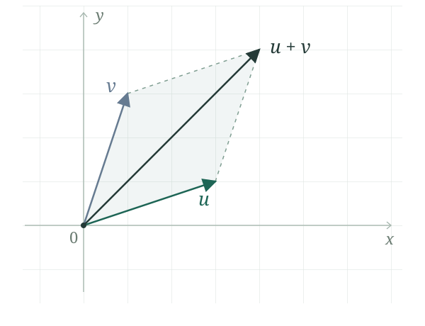

让几何直觉与严谨推理，在探索中相遇。
进度

浏览器未启用脚本；仍可阅读第一章，进度保存需要在浏览器中允许脚本运行。
01 · 向量 — 阅读第一章
02 · 线性方程组 / 03 · 矩阵(一) / 04 · 行列式 / 05 · 矩阵(二) / 06 · 线性空间 / 07 · 线性映射 / 08 · 内积空间及变换 / 09 · 实二次型 / 10 · 张量简介* / 11 · 应用*：即将开放。